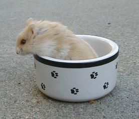
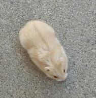
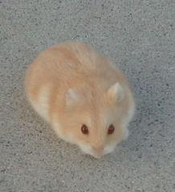
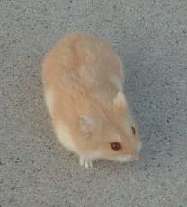

All beiges are agouti -- which is the original pattern of hamsters in the wild. Agouti hamsters have off-white bellies and scallops on their sides. Their hairs are also a different color at the roots (undercoat) than at the tips.
| Beige Campbells Dwarf Hamsters | ||||||||||||||
|  | ||||||||||||||
|  | ||||||||||||||
|  | ||||||||||||||
|  | ||||||||||||||
| Beige (bbpp) is the two-gene color which is the combination of the argente and black-eyed argente (BEA) genes. Since both of these colors are recessive, the hamster must have two copies of both of these genes to be beige. It is not difficult to breed beiges if you have both an argente and a BEA hamster -- but you must have both genes. To get beiges, you would breed the red-eyed argente to the black-eyed argente. All babies would be normal carrying argente and BEA. You would then breed two of these normals together. From this pairing, you should get 9/16 normals, 3/16 argentes, 3/16 BEAs, and 1/16 lilac fawns. (It is a bit trickier but still doable if you start with animals who only carry these genes.) All beiges are agouti -- which is the original pattern of hamsters in the wild. Agouti hamsters have off-white bellies and scallops on their sides. Their hairs are also a different color at the roots (undercoat) than at the tips. |
||||||||||||||